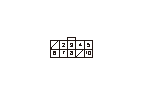

DTC P0706 (6-2)
DTC P0706（6-2）:
シフト ポジション センサおよびセンサ回路断線
コントロール ワイヤの調整確認
1-1
イグニッション スイッチをON（II）にする
1-2
セレクト レバーを各ポジションにシフトして、セレクト レバーのポジションとシフト ポジション インジケータの表示が同調しているかを点検し、コントロール ワイヤの調整が正しいかを確認する
◆セレクト レバーのポジションとインジケータの表示が同調してコントロール ワイヤの調整が正しいか
YES
-
ステップ
2
へ進む
NO
-
コントロール ワイヤの調整を行う
、調整作業終了後ステップ
2
へ進む
フォワードSWの入力確認
2-1
HDSでDTCのクリアを行う
2-2
イグニッション スイッチをON（
II
）にする
2-3
セレクト レバーをDポジションにしたときとLポジションにしたときにHDSのATテスト モード メニューから、データ リストでフォワードSWの入力を確認する
◆ DおよびLのどちらのポジションでもフォワードSWはONになっているか
YES
-
一時的な故障
NO
-
ステップ
3
へ進む
ATPFWD回路の断線点検
3-1
イグニッション スイッチをLOCK（
0
）にする
3-2
シフト ポジション センサ カプラの接続を外す
3-3
シフト ポジション センサ カプラのNo.5端子とボディ アース間にジャンパ ワイヤを接続してATPFWD回路を短絡させる
3-4
イグニッション スイッチをON（
II
）にする
3-5
セレクト レバーをDポジションにしたときとLポジションにしたときにHDSのATテスト モード メニューから、データ リストでフォワードSWの入力を確認する
◆ DおよびLのどちらのポジションでもフォワードSWはONになっているか
YES
-
ステップ
4
へ進む
NO
-
PGM-FI ECUカプラB（49P）のNo.29端子とシフト ポジション センサ間のコードの断線、故障修理完了後ステップ
5
へ進む

シフト ポジション センサ アース回路の断線点検
4-1
イグニッション スイッチをLOCK（
0
）にする
4-2
シフト ポジション センサ カプラのNo.10端子とボディ アース間の導通を点検する
◆ 導通があるか
YES
-
シフト ポジション センサを交換する
、交換作業終了後ステップ
5
へ進む
NO
-
シフト ポジション センサ カプラのNo.10端子とアース（G101）間のコードの断線、またはアース（G101）の不良、故障修理完了後ステップ
5
へ進む
故障修理完了の確認
5-1
HDSでDTCのクリアを行う
5-2
イグニッション スイッチをLOCK（
0
）にする
5-3
前輪が自由に回転できるように、パーキング ブレーキをかけて前輪をジャッキ アップし、リジッド ラックで支える、または車両をリフト アップする
5-4
エンジンを始動する、VSA装備車はVSAをOFFにする
5-5
Dポジションで発進して、48km/hの速度になるまで加速し、減速して止める
5-6
HDSのATテスト モード メニューから、DTCs/フリーズ データのDTCモニタ ツールでDTC
P0706
（6-2）のOBDステータスを確認する
◆ 正常判定か
YES
-
故障修理完了
NO
-
ステップ
2
から再点検する
OBDステータスが未完了の場合は再点検する